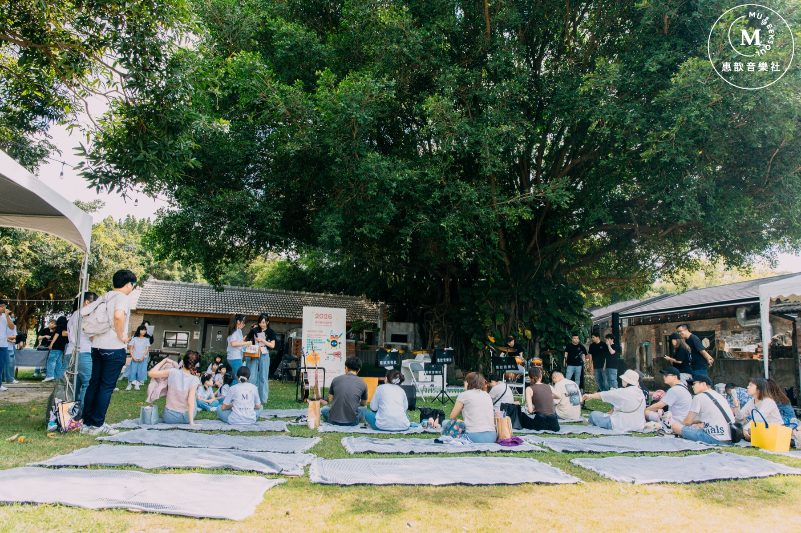
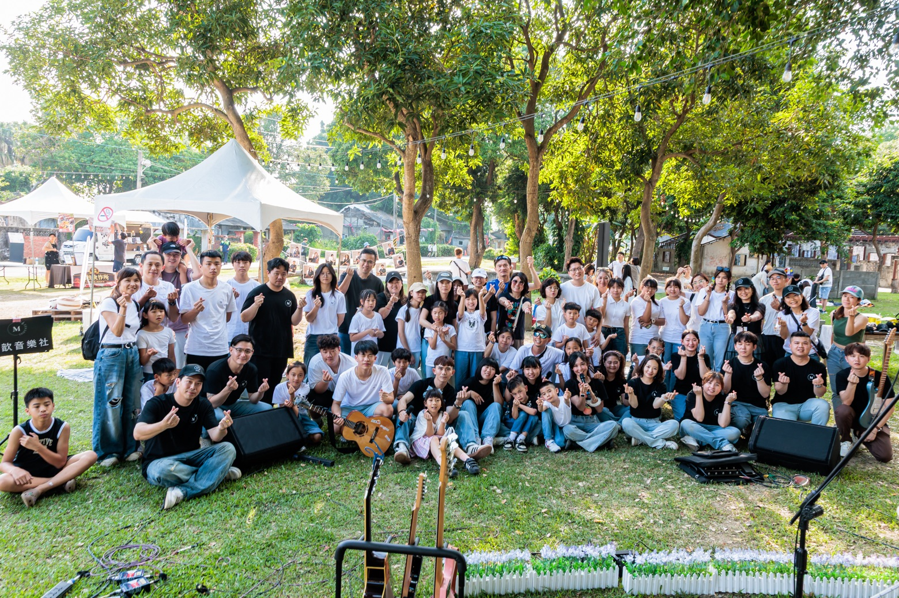

Museeksoul — Seek your music soul.
惠歆音樂，用陪伴，培養每一顆音樂靈魂。 Seek your music soul.
We tend each note like a seed. 喜歡，才是最強大的動力。
音樂園丁，用無比的熱忱與耐心澆灌每位音樂種子，以期萌芽、成長、茁壯，陪伴莘莘學子綻放出屬於自己的音樂之花。
八樣樂器，加上一個一起玩音樂的團班——每一門都依年齡與目的，找到最適合的起點。完整課程目錄都在課程頁。
瀏覽九門課程 →從教室到大樹下，學生們把這一年的努力，唱給家人與彼此聽。

草地音樂會為年度成果展 · 真實活動。下期檔期將由教室公告